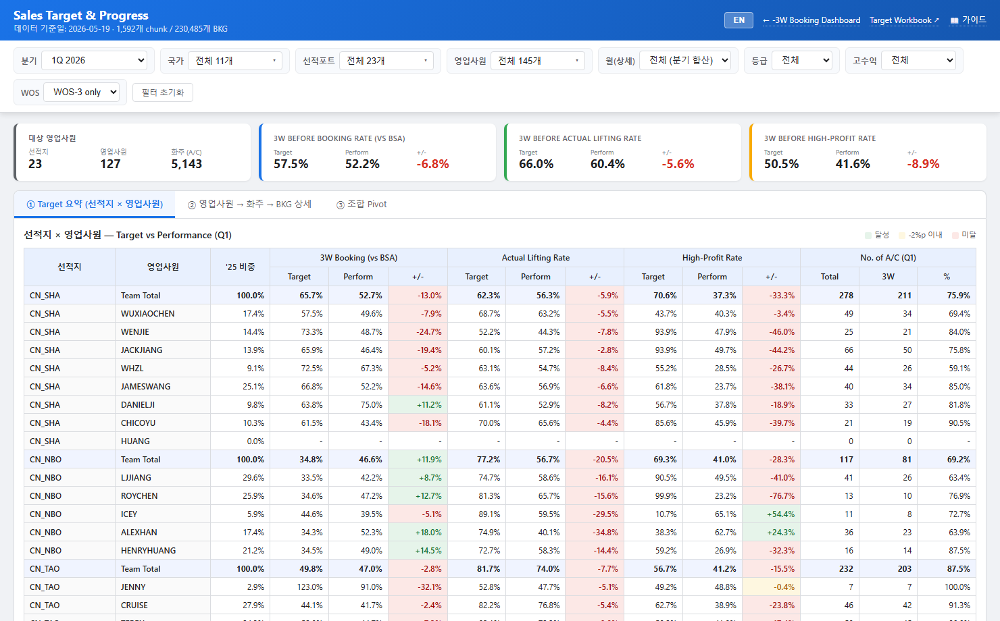
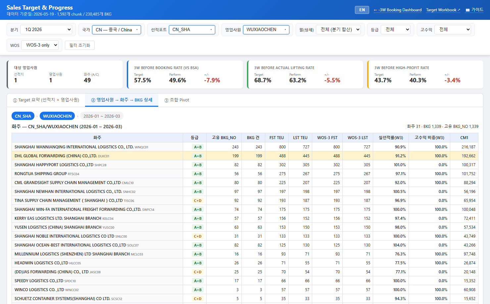
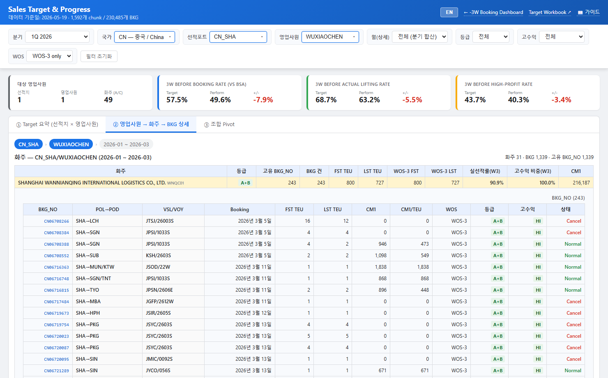
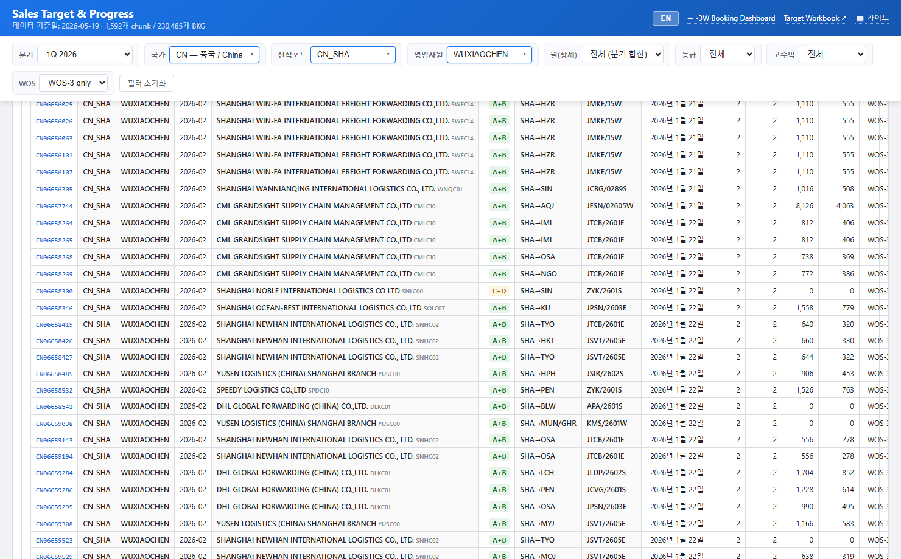
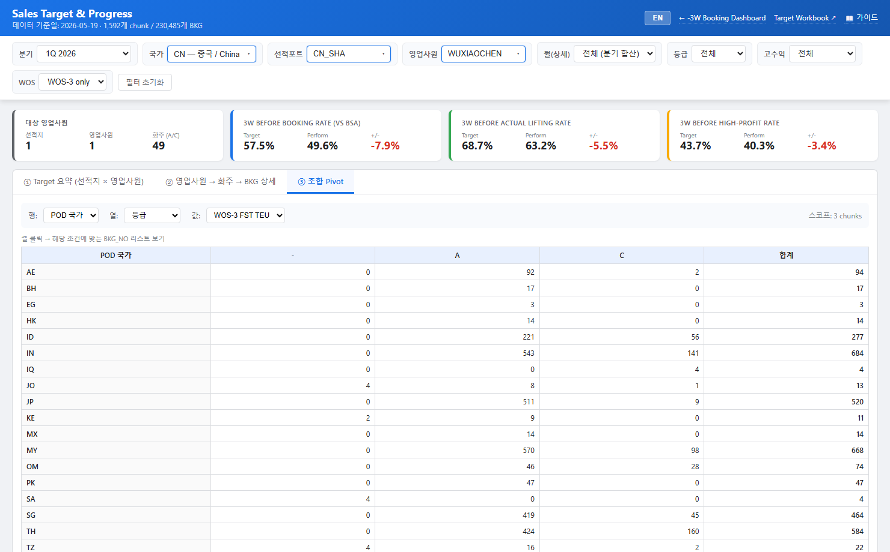
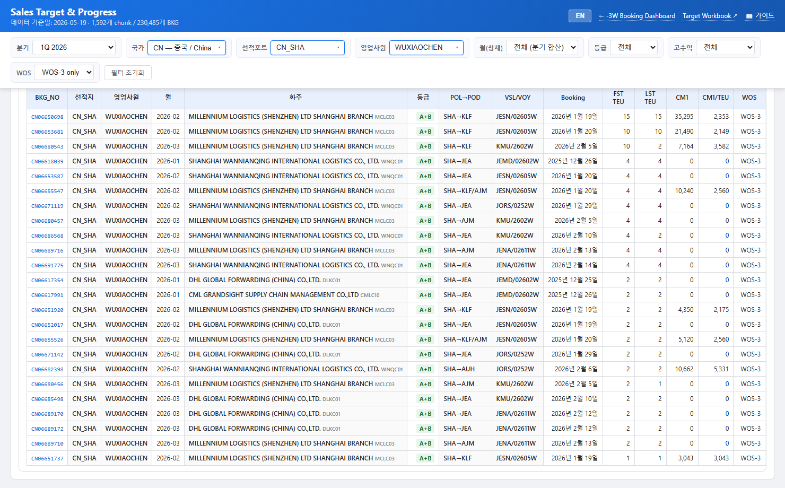

1. 화면 개요
1. Overview
Sales Target & Progress 화면은 영업사원들이 본인의 목표 대비 실적을 구간별(선적지) → 영업사원 → 화주 → 부킹번호(BKG_NO) 까지 4단계로 디테일하게 확인할 수 있는 전용 화면입니다. -3W Booking Dashboard와 같은 데이터(매일 갱신되는 부킹 스냅샷)를 사용하지만, 목표(Target) 시트의 수치와 결합하여 Target / Performance / GAP 관점으로 보여줍니다.

화면 1. 첫 진입 — 상단 헤더, 필터 바, 4개 KPI 카드, ① Target 요약 표.
3가지 view 모드
| View | 용도 |
|---|
| ① Target 요약 | 선적지 × 영업사원 매트릭스로 3개 KPI의 Target / Perform / GAP을 본다 |
| ② Drill | 선택한 영업사원의 화주별 실적과 그 안의 BKG_NO 리스트까지 확인 |
| ③ 조합 Pivot | 행 × 열 × 측정값 자유 조합. 셀 클릭 시 매칭 BKG_NO 리스트 표시 |
The Sales Target & Progress screen lets each salesperson drill into their target-vs-actual performance at four levels — Origin → Salesperson → Shipper → BKG_NO. It uses the same daily booking snapshot as the -3W Booking Dashboard, but joins it with the Target sheet to expose Target / Performance / GAP.
Fig. 1. Landing — header, filter bar, four KPI cards, ① Target summary table.
Three views
| View | Purpose |
|---|
| ① Target Summary | Origin × Salesperson matrix; Target / Perform / GAP for 3 KPIs |
| ② Drill | Shipper rollup and BKG_NO list for one or more selected salespeople |
| ③ Pivot | Free row × col × metric pivot; click a cell for the matching BKG list |
2. 접근 / 진입 경로
2. How to open
- 메인 대시보드 헤더의 🎯 Sales Target 버튼 (새 탭)
- URL:
https://jkpark-create.github.io/kmtc-3w-dashboard-web/sales-target/
- 메인 대시보드 ②부킹 트렌드 → 영업사원별 표의 우측 "→" — 해당 영업사원으로 자동 드릴
- The 🎯 Sales Target button in the main dashboard header (opens a new tab).
- URL:
https://jkpark-create.github.io/kmtc-3w-dashboard-web/sales-target/
- The "→" link in the bySales table of the main dashboard's ② Booking Trends tab — auto-drills to that salesperson.
- EN/KO 토글 — 화면 전체 언어 전환. 브라우저에 저장.
- ← -3W Booking Dashboard — 메인 대시보드로
- Target Workbook ↗ — 원천 Google Sheets
- 📖 가이드 — 이 페이지
- EN/KO toggle — switches the language; preference is saved in localStorage.
- ← -3W Booking Dashboard — back to the main dashboard.
- Target Workbook ↗ — opens the source Google Sheets.
- 📖 Guide — this page.
4. 필터 바 사용법
4. Filter bar
필터 바는 9개 그룹으로 구성됩니다. 모두 즉시 반영되며 변경 시 화면이 자동 갱신됩니다.
| 필터 | 역할 |
|---|
| 분기 | 1Q 2026 (Perform) 또는 2Q 2026 (Progress) |
| 월(상세) | 분기 합산 또는 단일 월. ② / ③ view에 적용 |
| 선적국가 | 다중선택. 화이트리스트 11개 국가만 노출 |
| 선적포트 | 다중선택. 위 국가에 속한 포트로 좁아짐. 화이트리스트 23개 포트만 노출 |
| 도착국가 | 다중선택. ② / ③ view의 BKG에서 POD 국가 기준 필터 |
| 도착포트 | 다중선택. 위 도착국가에 속한 항구만 보임 |
| 영업사원 | 다중선택. 위 선적지 범위 안의 영업사원만 옵션으로 노출 |
| 등급 | 전체 / A+B / C+D |
| 고수익 | 전체 / 고수익만 / 고수익 제외 |
| WOS | WOS-3 only (기본) 또는 전체 |
| 필터 초기화 | 모든 선택을 기본값으로 리셋 |
💡 팁: 처음에는 ① 요약에서 관심 영업사원을 찾고 행을 클릭하면 자동으로 ② 드릴로 이동합니다.
The filter bar has nine groups. All changes apply immediately.
| Filter | Effect |
|---|
| Quarter | 1Q 2026 (Perform) or 2Q 2026 (Progress) |
| Month | Quarter total or a single YYYYMM. Drives ② and ③ scope. |
| Origin country | Multi-select. 11 whitelisted countries. |
| Origin port | Multi-select. Narrowed by country. 23 whitelisted ports. |
| Dest country | Multi-select. Filters BKG by POD country in ② / ③. |
| Dest port | Multi-select. Narrowed by dest country. |
| Salesperson | Multi-select. Only salespeople in the current origin scope. |
| Grade | All / A+B / C+D |
| Hi-Profit | All / Only / Exclude |
| WOS | WOS-3 only (default) or All |
| Reset | Reset every filter |
💡 Tip: Start in ① Summary, find a salesperson, click the row — that auto-drills to ②.
5. 다중선택 위젯 사용법
5. Multi-select widget
- 박스(▾)를 클릭하면 패널이 열림
- 상단의 전체 선택 / 해제 일괄 조작
- 검색창에 텍스트 입력 → 옵션 빠르게 좁힘
- 체크박스 클릭 시 즉시 화면 갱신. 패널은 계속 열려 있어 연속 선택 가능
- 패널 바깥 클릭 → 닫힘
- 0개 선택 = 전체 동일
화이트리스트 — 선적국가 / 포트 (11 / 23)
| 국가 | 설명 | 포트 |
|---|
| CN | 중국 | CN_SHA, CN_NBO, CN_TAO, CN_XGG, CN_DLC, CN_LYG, CN_SHK_DCB, CN_XMN, CN_NNS |
| HK | 홍콩 | HK |
| TW | 대만 | TW |
| TH | 태국 | TH |
| VN | 베트남 | VN_SGN_CMP, VN_HPH |
| PH | 필리핀 | PH |
| MY | 말레이시아 | PKG+PKW, PEN, PGU |
| SG | 싱가포르 | SG |
| ID | 인도네시아 | JKT, SUB |
| IN | 인도 | IN |
| AE | UAE | AE |
- Click the toggle (▾) to open the panel
- Use Select all / Clear at the top to bulk-toggle
- Type in the search box to narrow options
- Check a box and the screen updates immediately. The panel stays open so you can pick several
- Click outside to close
- Zero checks = "all" (no filter)
Whitelist — origin country / port (11 / 23)
| Country | Name | Ports |
|---|
| CN | China | CN_SHA, CN_NBO, CN_TAO, CN_XGG, CN_DLC, CN_LYG, CN_SHK_DCB, CN_XMN, CN_NNS |
| HK | Hong Kong | HK |
| TW | Taiwan | TW |
| TH | Thailand | TH |
| VN | Vietnam | VN_SGN_CMP, VN_HPH |
| PH | Philippines | PH |
| MY | Malaysia | PKG+PKW, PEN, PGU |
| SG | Singapore | SG |
| ID | Indonesia | JKT, SUB |
| IN | India | IN |
| AE | UAE | AE |
6. 도착국가 / 도착포트 필터
6. Dest country / port
BKG의 POD 국가 와 POD 항구 기준으로 좁히는 필터입니다.
- 옵션은 매일 일일 빌드에서 부킹 스냅샷에 등장한 모든 도착지를 자동으로 모아 만듭니다.
- 도착국가를 먼저 선택하면 도착포트 드롭다운이 그 국가의 항구만 보여줍니다.
- 이 필터는 ② Drill의 화주표·BKG 리스트, ③ Pivot 결과에 반영됩니다. ① Target 요약은 시트 기반 집계라 도착지 필터의 영향을 받지 않습니다.
예: 선적국가 CN + 도착국가 KR 으로 한국향 중국 부킹만 보기. 도착포트 KR/PUS까지 좁히면 부산향만 필터.
Two extra multi-select filters scoped on each booking's POD country and POD port.
- Options are built automatically from every destination that appears in the daily booking snapshot.
- Selecting a dest country narrows the dest port dropdown.
- These filters affect the ② Drill shipper / BKG views and the ③ Pivot results. ① Target summary is sheet-aggregated and is unaffected.
Example: Origin CN + Dest KR → only China-to-Korea bookings. Add Dest port KR/PUS for Busan-only.
7. 상단 KPI 카드
7. KPI cards
| 카드 | 의미 |
|---|
| 대상 영업사원 | 현재 필터 안의 선적지 수 / 영업사원 수 / 화주(A/C) 수 |
| 3W Booking Rate | 3W before Booking Rate (vs BSA). Target / Perform / +- |
| Actual Lifting Rate | 3W before Actual Lifting Rate |
| High-Profit Rate | 3W before High-Profit Customer Rate |
+- 색상: 달성 / -2%p 이내 / 미달
| Card | Meaning |
|---|
| Scope | Origin / Salesperson / Shipper count for the current filter |
| 3W Booking Rate | 3W before Booking Rate (vs BSA) — Target / Perform / +- |
| Actual Lifting Rate | 3W before Actual Lifting Rate |
| High-Profit Rate | 3W before High-Profit Customer Rate |
+- colors: on target / within -2%p / behind
8. ① Target 요약
8. ① Target Summary
한 행 = 한 영업사원 (또는 선적지 Team Total). 3개 KPI별로 Target / Perform / +- 가 표시됩니다.
| 컬럼 | 의미 |
|---|
| '25 비중 | 2025년 해당 영업사원의 Total Lifting 비중 |
| 3W Booking (vs BSA) | WOS-3 시점 BKG TEU ÷ BSA TEU |
| Actual Lifting Rate | WOS-3 BKG 중 실제 선적된 비율 |
| High-Profit Rate | WOS-3 BKG 중 고수익 화주 BKG 비중 |
| Target / Perform / +- | 2025_base + Input %p / 실적 / 차이 |
행 클릭 → 해당 영업사원으로 자동 드릴.
One row per salesperson (or per-origin Team Total). Each of the 3 KPIs shows Target / Perform / +-.
| Column | Meaning |
|---|
| '25 share | Salesperson's 2025 share of Total Lifting at that origin |
| 3W Booking (vs BSA) | WOS-3 BKG TEU ÷ BSA TEU |
| Actual Lifting Rate | Loaded / WOS-3 BKG |
| High-Profit Rate | Hi-profit BKG / WOS-3 BKG |
| Target / Perform / +- | 2025 base + Input %p / Actual / Diff |
Click a row → auto-drill to that salesperson.
9. ② 영업사원 → 화주 → BKG 상세
9. ② Drill

화면 4. 화주별 실적 — 31개 화주 + 합계.
화주 행 클릭 시 그 화주의 BKG_NO 리스트가 펼쳐집니다.

화면 5. 화주 클릭 → 243건 BKG 펼침. POL→POD, VSL/VOY, Booking 일자, FST/LST TEU, CM1, CM1/TEU, WOS, 등급, 고수익, 상태 12개 컬럼.
BKG 상세 컬럼: BKG_NO / POL→POD / VSL/VOY / Booking 일 / FST TEU / LST TEU / CM1 / CM1/TEU / WOS / 등급 / 고수익(HI) / 상태(실선적·캔슬·진행중)
Fig. 4. Shipper rollup — 31 shippers + total.
Click any shipper row to expand its BKG_NO list.
Fig. 5. Click a shipper → 243 BKG rows. Columns: POL→POD, VSL/VOY, Booking date, FST/LST TEU, CM1, CM1/TEU, WOS, grade, hi-profit, status.
10. 전체 매칭 BKG_NO 보기 + CSV
10. All matching BKG_NO + CSV

화면 6. 모든 화주의 매칭 BKG를 한 표에. 16개 컬럼.
- 패널 헤더에 매칭 건수와 활성 필터가 표시됨
- 화면에는 상위 1,000건만 표시 — 전체는 CSV 내보내기로
- CSV는 UTF-8 BOM 포함 — Excel에서 한글 정상
⚠ 주의: 필터 없이 전체를 펼치면 수만 건. 좁혀서 사용하세요.
Fig. 6. Flat BKG list across all shippers. 16 columns.
- The header shows match count + active filter summary
- Top 1,000 rows are rendered; CSV export contains the full set
- CSV is UTF-8 with BOM — opens correctly in Excel for Korean characters
⚠ Warning: Unfiltered scope can return tens of thousands of rows — narrow first.
11. ③ 조합 Pivot
11. ③ Pivot

화면 8. 행=POD 국가, 열=등급, 값=WOS-3 FST TEU.
행/열/측정값을 자유롭게 조합. 셀 클릭 시 BKG_NO 리스트가 표 아래 패널로 펼침 + CSV 내보내기.

화면 9. 셀 클릭 결과 — 24건 BKG.
필터 범위 200 chunk 초과 시 경고. 응답 빠르게 하려면 좁히세요.
Fig. 8. Row=POD country, Col=Grade, Metric=WOS-3 FST TEU.
Pick any row, column, and metric. Clicking a cell opens the matching BKG list below the table, with CSV export.
Fig. 9. Cell click → 24 BKGs.
A warning appears when scope exceeds 200 chunks — narrow filters for speed.
12. 메인 대시보드와의 연동 (Deep link)
12. Deep link from the main dashboard
| 파라미터 | 예시 |
|---|
| quarter | q1, q2 |
| view | summary, drill, pivot |
| country / countries | CN 또는 CN,VN |
| origin / origins | CN_SHA 또는 CN_SHA,VN_HPH |
| dest_country / dest_countries | KR,JP |
| dest_port / dest_ports | KR/PUS,JP/TYO (URL-인코딩 필요) |
| sales | WUXIAOCHEN 또는 콤마 다중 |
| month / grade / profit / wos | 202604 / AB / HI / W3 |
| Param | Example |
|---|
| quarter | q1, q2 |
| view | summary, drill, pivot |
| country / countries | CN or CN,VN |
| origin / origins | CN_SHA or CN_SHA,VN_HPH |
| dest_country / dest_countries | KR,JP |
| dest_port / dest_ports | KR/PUS,JP/TYO (URL-encode the slash) |
| sales | WUXIAOCHEN or comma list |
| month / grade / profit / wos | 202604 / AB / HI / W3 |
13. 데이터 흐름 / 갱신 주기
13. Data flow
- Tableau 다운로드 → 부킹 스냅샷 (booking_snapshot_result_*.csv)
- 대시보드 빌드 (dashboard_summary_*.json) → salesman.csv로 영업사원 remap → dist/data.json
- Sales Target 빌드 — Summary_All + 스냅샷 집계 → index.json + manifest.json + 1700여 chunks
- GitHub Pages push → ~1시간 내 라이브
출력 파일
sales-target/index.json — Summary_All 미러 (~131 KB)sales-target/manifest.json — chunk 카탈로그 + 도착국가 / 도착포트 옵션sales-target/data/<origin>__<salesman>__<YYYYMM>.json — lazy load
헤더의 "데이터 기준일"이 오늘이 아니면 일일 작업이 안 끝났거나 실패한 상태입니다.
- Tableau download → booking_snapshot_result_*.csv
- Dashboard build (dashboard_summary_*.json) → salesman.csv remap → dist/data.json
- Sales target build — Summary_All + snapshot rollup → index.json + manifest.json + ~1,700 chunks
- GitHub Pages push → live within ~1 hour
Output
sales-target/index.json — mirror of Summary_All (~131 KB)sales-target/manifest.json — chunk catalogue + dest country / port optionssales-target/data/<origin>__<salesman>__<YYYYMM>.json — lazy
If "Data date" in the header isn't today, the daily job didn't run or didn't finish.
14. 목표 입력 (Eternal Workbook)
14. Target input (Eternal Workbook)
| 워크북 | 역할 |
|---|
2026 OBT Sales Target by 선적지
1YxZkwvoMaQ... | 기존 36-탭 리포트 워크북. Summary_All에서 Target/Perform/GAP 수식 → 이 화면이 읽음. |
OBT Sales Target Input (Eternal)
13BSBBs-McCCH... | 신규 입력 전용 워크북. Year 컬럼으로 연도 관리 — 영원히 한 URL. |
탭 구조
| 탭 | 내용 |
|---|
| README | 안내 + 화이트리스트 |
| Settings | Active_Year / Admins / Last_Reviewed / Notes |
| Targets | Year × Tab (23 port) Input %p (Booking/Lifting/HP) + Memo |
| Audit | 변경 이력 (append-only, Apps Script로 자동기록 확장 가능) |
매년 롤오버
- Targets 탭에 다음 연도 23 row append
- Settings의 Active_Year 변경
- Admins 갱신
| Workbook | Purpose |
|---|
2026 OBT Sales Target by 선적지
1YxZkwvoMaQ... | The 36-tab report workbook. Summary_All formulas compute Target/Perform/GAP — read by this screen. |
OBT Sales Target Input (Eternal)
13BSBBs-McCCH... | New input-only workbook. Year column drives downstream — one URL forever. |
Tabs
| Tab | Content |
|---|
| README | How-to + whitelist |
| Settings | Active_Year / Admins / Last_Reviewed / Notes |
| Targets | Year × Tab (23 ports), Input %p (Booking / Lifting / HP) + Memo |
| Audit | Change log (append-only; Apps Script can auto-record edits later) |
Annual rollover
- Append 23 rows for the next year in Targets
- Update Active_Year in Settings
- Refresh the Admins list
15. 자주 묻는 질문
15. FAQ
Q1. 내 데이터가 안 보입니다.
국가/포트/영업사원/도착지 필터가 너무 좁지 않은지 확인. "필터 초기화"로 리셋. 화이트리스트 외 origin은 표시되지 않습니다.
Q2. Target 컬럼이 비어 있어요.
2025_basis가 없는 신규 진입이거나 Targets 탭에 row가 없는 경우. 관리자에게 입력 요청.
Q3. 도착지 필터가 ① 요약에 안 먹어요.
① 요약은 시트 기반 집계라 BKG 단위 필터(도착지·등급·고수익·WOS)의 영향을 받지 않습니다. ② / ③에서 사용하세요.
Q4. CSV가 한글 깨짐.
UTF-8 BOM 포함이므로 Excel에서 바로 열어야 합니다. 메모장에서 열면 깨지는 경우가 있습니다.
Q5. 영어로 전환?
헤더 우측의 EN 버튼. 선택은 브라우저에 저장.
Q6. 데이터가 오래 됐어요.
매일 평일 09:03 자동 빌드. 헤더의 "데이터 기준일" 확인 후 24시간 이상 지났으면 운영 담당자에게 문의.
Q1. I can't see my data.
Check that the origin / port / salesperson / destination filters aren't too narrow. Click "Reset filters". Non-whitelisted origins never appear.
Q2. Target columns are empty.
That salesperson has no 2025 basis (newly onboarded in Q1) or the Targets tab is missing their row. Ask the admin to enter it.
Q3. Dest filter doesn't affect ① Summary.
① Summary is sheet-aggregated, so BKG-level filters (destination, grade, hi-profit, WOS) don't apply there. Use ② / ③ instead.
Q4. CSV shows garbled Korean.
It's UTF-8 with BOM — open it in Excel directly. Notepad sometimes mis-detects the encoding.
Q5. How do I switch to English?
The EN button on the top right. Your choice is saved in localStorage.
Q6. Data looks stale.
Daily build runs at 09:03 weekday. Check the "Data date" in the header. Older than 24 h → contact the operator.
© KMTC OBT — Sales Target & Progress · 마지막 업데이트 2026-05-20
질문 / 버그 신고는 운영 담당자에게.
© KMTC OBT — Sales Target & Progress · Last updated 2026-05-20
For questions or bug reports, contact the operations team.